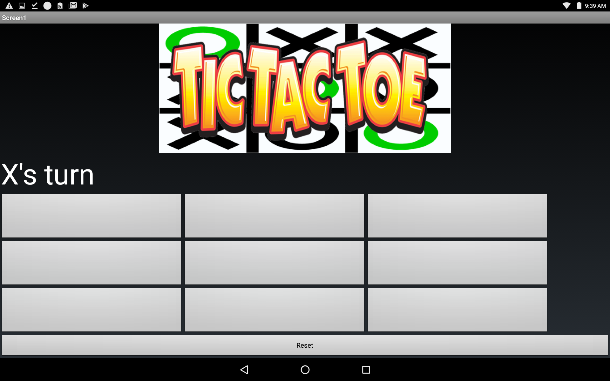
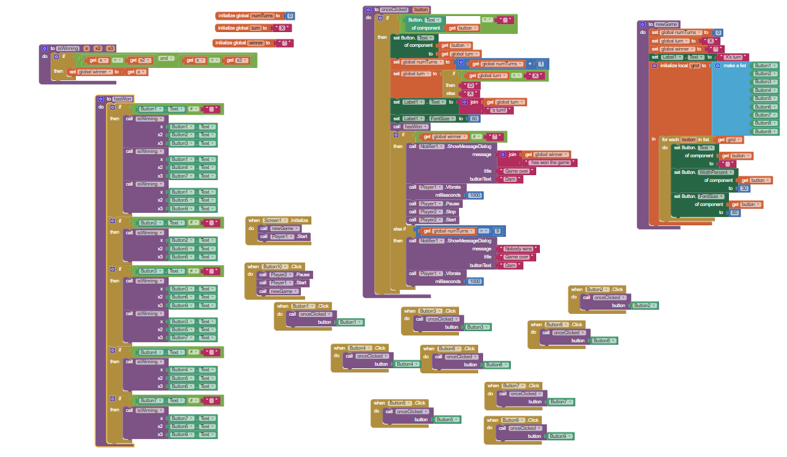

This is my Portfolio Page!

This is the first game I made with Scratch! In this game, you play as Dan and are trying to make sure that D Money doesn't catch the ball. If he does, you lose. Also, every ten seconds, a new D Money will appear. And, every 11 seconds, another ball will appear. There is also four difficulty settings, with the keys e, r, h, and s, you can increase difficulty. Watch out, though, because if you go super mode, D Money will dance all over the place! Press the green flag to start, or the red stop sign to pause.
These are images of the app that I made with MIT App Inventor! In this app, you can play tic tac toe with a friend! Also, there is cool background music, so make sure that the sound is on. We designed it so that at the top of the screen, the current player is displayed, and if someone wins, a victory song plays. One of the most unexpected things that had to be considered when designing this was that we needed a different condition to be considered for every way of winning the game.
 